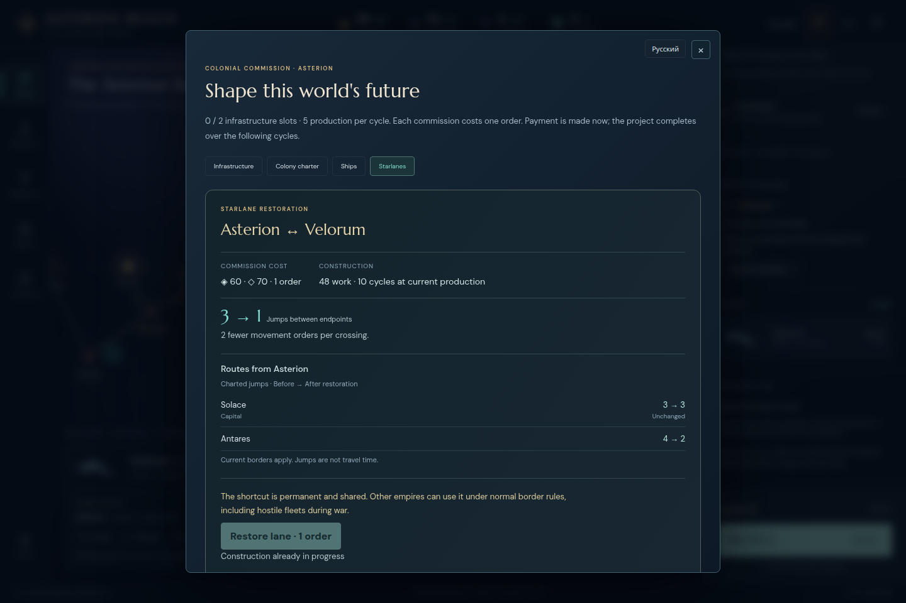
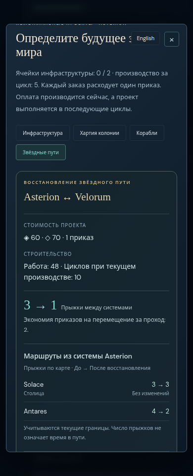
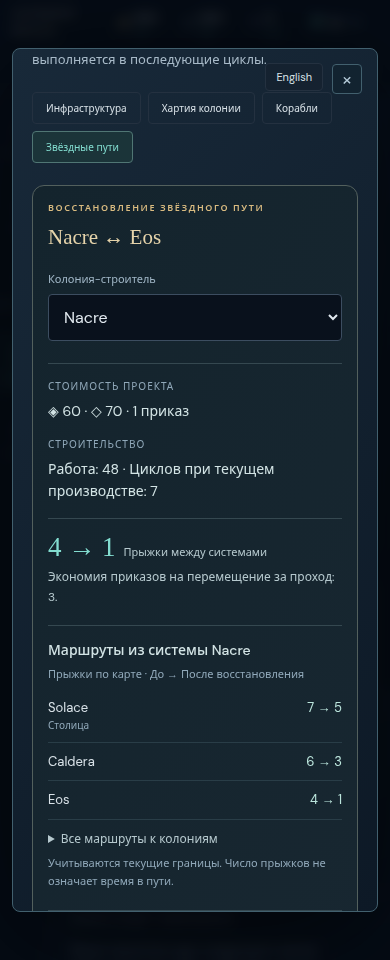
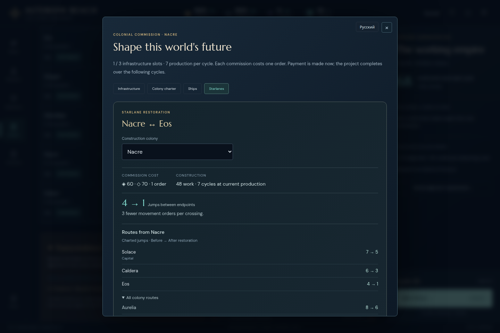
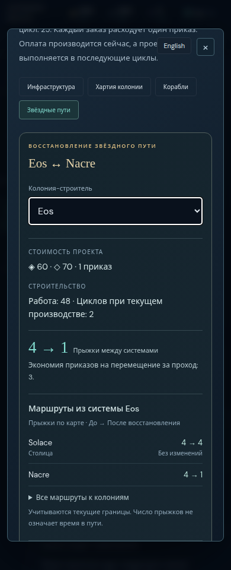
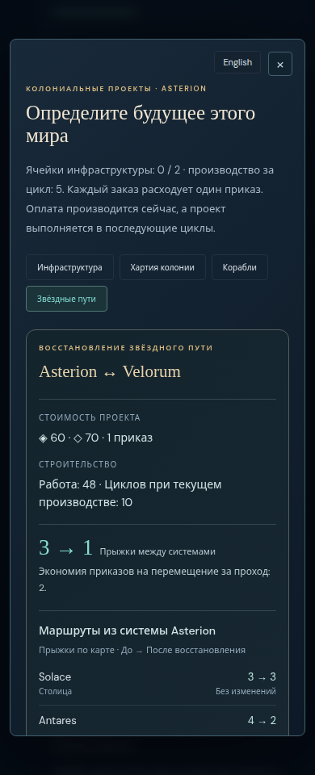

Colony route preview: focused independent review
Passed 8 main cases on frozen commit ccb786a. Actual cycle 13 decisions and reused controlled fixtures are distinguished below.

Actual pending-lab decision: capital unchanged, Antares improved. Text
Both relevant routes fit at 390px; screenshot is scrolled to the comparison. Text
Capital plus two benefits, with remaining routes collapsed. Text
Native disclosure exposes the remaining colony comparisons. Text
Changing builder recomputes the route origin, destinations and quote. Text
Initial reading position retains visible title and Close focus. TextIndependent colony-route preview review
PASS for this bounded scope. Target http://127.0.0.1:33147, version 0.23.0, commit ccb786af8d6ca83fa2a59c05f665d7a60a062f91. Delivered build/assets are pinned before and after in build-before.json/build-after.json.
Actual cycle 13 save: English/Russian at 1440×960 and 390×960 all show Solace 3→3 with Capital/Unchanged, and Antares 4→2. Both rows are visible without opening a disclosure or horizontal scrolling. The selected builder is excluded from the destination list. Asterion's real pending lab remains exactly 10/30 work, Restore remains disabled for current construction, and the 60 credit/70 mineral/10 cycle prospective lane quote remains intact. Previewing, language toggles and Escape leave the entire save and selected fleet unchanged.
The new block explains the actual decision better than endpoint 3→1 alone: the capital's connection does not improve while Antares benefits. It supports the lab-first choice without implying the lane lacks all future value. The actual block is about 198px English/218px Russian tall at 390px. This is a reasonable reading cost for two relevant comparisons; no additional task or compulsory click is introduced.
Controlled many-colony case: the existing 7 colony/all-charted fixture is reused and explicitly labeled synthetic. Both dormant endpoints are owned. At both sizes/languages, the collapsed panel shows capital plus at most 2 improvements, with 3 remaining rows in a native disclosure. Choosing Eos instead of Nacre updates the origin and distances; its own row disappears, Nacre becomes a destination, the capital remains first, and the construction quote changes 7→2 cycles. The remaining list becomes 4 rows. Full game state and selected fleet remain unchanged. The 60/70 costs and permanent/shared/hostile-use warning stay outside the disclosure and readable by ordinary vertical scrolling.
All 8 main cases pass with zero page errors. Additional focused checks confirm initial Close focus/title visibility in all 4 actual cases and keyboard Enter open/close plus retained builder-selector focus in Russian 390. Screens showing the route block are deliberately scrolled to that block; they are not initial-open screenshots. actual-ru-390-initial records the initial reading position separately.
No new defect observed. No source edits or source copies were made. This review does not rerun restoration lifecycle, closed/unknown-route projections or private-data invariance; the parent covers those in its focused engine tests. Inputs, complete results, text/screens and scripts are retained here with a SHA-256 manifest.